各种工具的笔记文档
本项目基于mdBook构建，可以参考以下链接进行安装
hUser Guide: ttps://rust-lang.github.io/mdBook/index.html github: https://github.com/rust-lang/mdBook
Windows中安装Redis
Redis 官方不建议在 windows 下使用 Redis，所以官网没有 windows 版本可以下载。还好微软团队维护了开源的 windows 版本，虽然只有 3.2 版本，对于普通测试使用足够了。
安装包方式安装 Redis 服务
下载地址：https://github.com/MicrosoftArchive/redis/releases
点击下载：

您可以看到 Redis 现在已下载。
或者您也可以使用下面链接下载。
https://github.com/rgl/redis/downloads
下载完成之后双击按着引导流程安装。
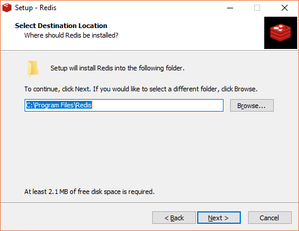 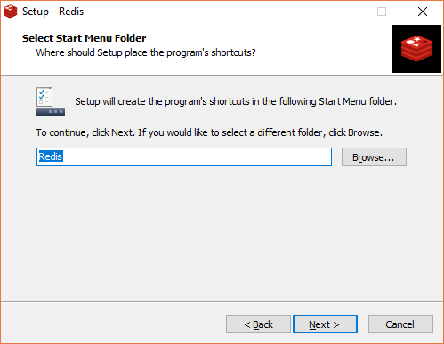 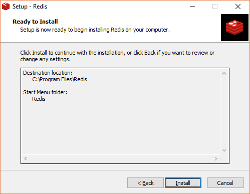
启动 Redis
Redis 现在可以使用了。打开 Redis 程序目录：
文件介绍：
redis-server.exe：服务端程序，提供 redis 服务
redis-cli.exe: 客户端程序，通过它连接 redis 服务并进行操作
redis-check-dump.exe：RDB 文件修复工具
redis-check-aof.exe：AOF 文件修复工具
redis-benchmark.exe：性能测试工具，用以模拟同时由 N 个客户端发送 M 个 SETs/GETs 查询 (类似于 Apache 的 ab 工具)
redis.windows.conf： 配置文件，将 redis 作为普通软件使用的配置，命令行关闭则 redis 关闭
redis.windows-service.conf：配置文件，将 redis 作为系统服务的配置
单击 redis-server.exe，启动 Redis 服务。
现在启动 Redis 客户端。
检查 Redis 是否已连接。
使用 PING 命令。
Redis 服务窗口也输出 1 个客户端已连接。
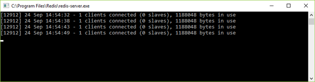
直接解压的方式安装 redis
首先下载 redis 安装包：https://github.com/MSOpenTech/redis/releases
解压安装包到相应文件夹，任何盘符都行，例如 E:\tools\redis-3.2.100。
使用命令行启动 Redis 服务
运行 cmd，cd 进入对应目录 E:\tools\redis-3.2.100，执行：
redis-server.exe redis.windows.conf
*注：可以把 redis 的路径加到系统的环境变量里，这样就省得再输路径了，后面的那个 redis.windows.conf 可以省略，如果省略，会启用默认的参数。
输入之后会显示如下：

安装 redis 到 windows 服务
redis-server --service-install redis.windows.conf
查看 windows 服务是否加入：
这时候先关闭打开的第一个 cmd 窗口，然后执行以下命令启动再次 redis：
redis-server --service-start
停止 redis 服务：
redis-server --service-stop
最后，测试一下 redis 是否能够正常使用：
切换到 redis 目录下：E:\tools\redis-3.2.100 下：
redis-cli.exe -h 127.0.0.1 -p 6379
Windows中安装JDK
原文作者：souvc 博文出处：http://www.cnblogs.com/liuhongfeng/p/4177568.html
本节内容：
以下是详细步骤
一、准备工具:
1.JDK
JDK 可以到官网下载
2.系统
我这里是WINDOWS7 64系统

可以根据系统的版本下载相对应的JDK。

我这里选择：jdk-8u25-windows-x64.exe
注意区分：
Java SE Development Kit 8u25 Java SE Development Kit 8u25 Demos and Samples Downloads JavaFX Demos and Samples Downloads
第一个 java se开发包 第二个 java se开发包+示例 第三个 javaFX开发包和示例
第一个是必须的配置Java开发环境的
二、方法/步骤
1.安装JDK，JRE， 选择安装目录
安装过程中会出现两次 安装提示 。第一次是安装 jdk ，第二次是安装 jre 。建议两个都安装在同一个java文件夹中的不同文件夹中。（不能都安装在java文件夹的根目录下，jdk和jre安装在同一文件夹会出错）。
（1）双击jdk-8u25-windows-x64.exe 进行安装。
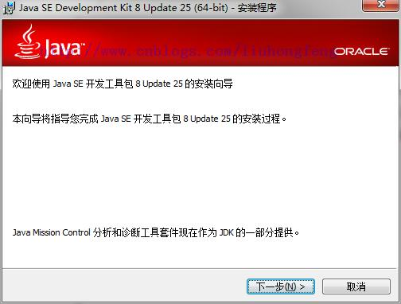
（2）点击“下一步”继续。

（3）选择安装路径，然后点击下一步。
默认是在C盘。我这里选择的是D盘。路径为：D:\Java\jdk1.8.0_25\

（4）等待安装结束之后。选择JRE安装的路径，点击下一步。
默认会选择C盘。

等待安装完成。
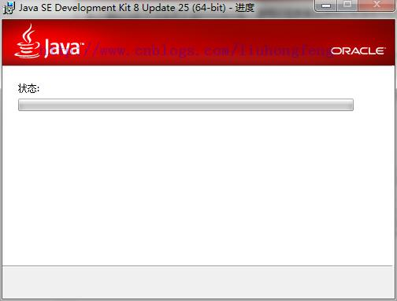
（5）JRE的安装

（6）我这里选择D盘。选择更改的时候，先在硬盘里面建一个文件夹。因为在选择的时候它不给新建。我这里是建了一个：jre1.8.0_25 文件夹。


（7）安装完成，点击关闭。

2.配置系统环境
配置环境变量：右击“我的电脑”-->"高级"-->"环境变量"。
（1）JAVA_HOME环境变量。 作用：它指向jdk的安装目录，Eclipse/NetBeans/Tomcat等软件就是通过搜索JAVA_HOME变量来找到并使用安装好的jdk。 配置方法：在系统变量里点击新建，变量名填写JAVA_HOME，变量值填写JDK的安装路径。（根据自己的安装路径填写）
JAVA_HOME：D:\Java\jdk1.8.0_25

（2）CLASSPATH环境变量。
作用：是指定类搜索路径，要使用已经编写好的类，前提当然是能够找到它们了，JVM就是通过CLASSPTH来寻找类的。我们需要把jdk安装目录下的lib子目录中的dt.jar和tools.jar设置到CLASSPATH中，当然，当前目录“.”也必须加入到该变量中。 配置方法： 新建CLASSPATH变量，变量值为：.;%JAVA_HOME%\lib;%JAVA_HOME%\lib\tools.jar 。CLASSPATH变量名字，可以大写也可以小写。注意不要忘记前面的点和中间的分号。且要在英文输入的状态下的分号和逗号。
CLASSPATH ：.;%JAVA_HOME%\lib;%JAVA_HOME%\lib\dt.jar;%JAVA_HOME%\lib\tools.jar;

（3）path环境变量
作用：指定命令搜索路径，在i命令行下面执行命令如javac编译java程序时，它会到PATH变量所指定的路径中查找看是否能找到相应的命令程序。我们需要把jdk安装目录下的bin目录增加到现有的PATH变量中，bin目录中包含经常要用到的可执行文件如javac/java/javadoc等待，设置好PATH变量后，就可以在任何目录下执行javac/java等工具了。
在系统变量里找到Path变量，这是系统自带的，不用新建。双击Path，由于原来的变量值已经存在，故应在已有的变量后加上“;%JAVA_HOME%\bin;%JAVA_HOME%\jre\bin”。注意前面的分号。
Path：;%JAVA_HOME%\bin;%JAVA_HOME%\jre\bin

然后点击确定完成。
三、 测试环境。
检验是否配置成功 运行cmd 分别输入java，javac， java -version （java 和 -version 之间有空格）。
1.Java

2.Javac
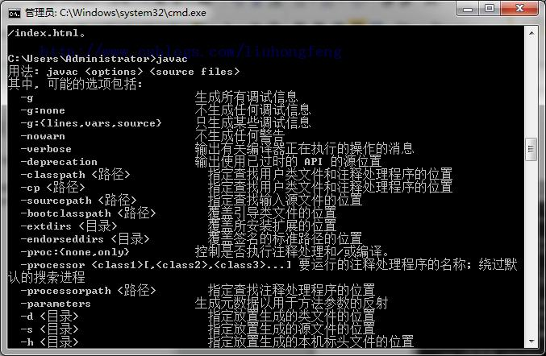
3.java –version

若如图所示 显示版本信息 则说明安装和配置成功。
也可以在命令行输入 echo %JAVA_HOME% 来查看当前的javahome路径。
小结： 环境变量： JAVA_HOME：D:\Java\jdk1.8.0_25 CLASSPATH ：.;%JAVA_HOME%\lib;%JAVA_HOME%\lib\dt.jar;%JAVA_HOME%\lib\tools.jar; Path：;%JAVA_HOME%\bin;%JAVA_HOME%\jre\bin
测试： Java，javac，java –version
注意：

原文作者：souvc 博文出处：http://www.cnblogs.com/liuhongfeng/p/4177568.html
本文参与 腾讯云自媒体同步曝光计划，分享自作者个人站点/博客。
原始发表：2014-12-22 ，
如有侵权请联系 cloudcommunity@tencent.com 删除
Windows中安装Maven
Maven是一个项目管理的Java 工具，在JavaEE中，我们可以使用Maven方便地管理团队合作的项目，现在我们在学习JavaEE框架，使用Maven可以管理类库，有效方便地供团队中的其他人员使用。
一、下载 Maven 。
请访问Maven的下载页面 官网下载，其中包含针对不同平台的各种版本的Maven下载文件。
注意：

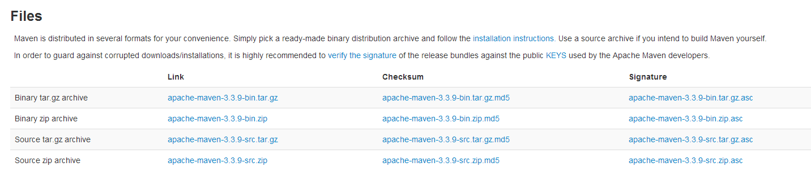
我这里下载的是：apache-maven-3.3.9-bin.zip 版本。
二、解压 maven 压缩包。
解压apache-maven-3.1.1-bin.zip，并把解压后的文件夹下的apache-maven-3.1.1文件夹移动到E:\Maven 下，如果没有Maven 这个文件夹的话，请自行创建。
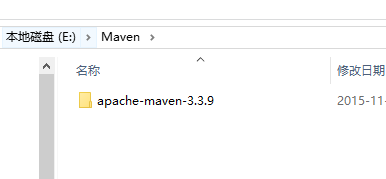
三、配置maven 的环境变量
右键“计算机”，选择“属性”，之后点击“高级系统设置”，点击“环境变量”，来设置环境变量，有以下系统变量需要配置：
新建系统变量 MAVEN_HOME 变量值：E:\Maven\apache-maven-3.3.9
编辑系统变量 Path 添加变量值： ;%MAVEN_HOME%\bin
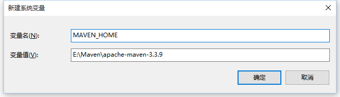
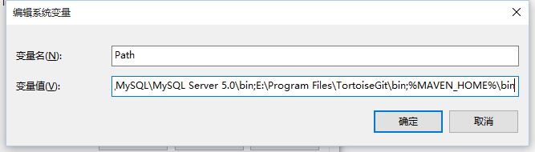
注意：注意多个值之间需要有分号隔开，然后点击确定。
四、检测是否安装成功。
最后检验配置是否成功：用win键+R，来打开命令行提示符窗口，即Dos界面，输入mvn --version 若出现以下情况说明配置成功

或是输入：echo %M2_HOME%
查看版本：mvn -v
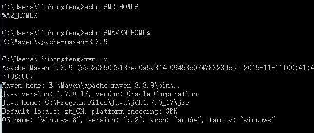
五、升级。
Maven还比较年轻，更新比较频繁，因此用户往往会需要更新Maven安装以获得更多更酷的新特性，以及避免一些旧的bu
只需要按照上面的配置过程换成新的包即可。
WindowsServer2012r2中安装MySQL
MySQL 1.首先去MySQL的官网下载安装包
2.其他下载需要登录，选择下面的直接安装

3.然后解压到文件夹中（本文解压C:\mysql-8.0.29-winx64），并配置初始化的mi.ini文件（创建my.ini文件并把以下内容粘贴进去，记得先在解压路径下创建data文件夹哦），文件创建好后放到解压路径：C:\mysql-8.0.29-winx64 下 文件内容： [mysql] 设置mysql客户端默认字符集 default-character-set=utf8 [mysqld] 设置3306端口 port = 3306 设置mysql的安装目录 basedir=C:\mysql-8.0.29-winx64 设置mysql数据库的数据的存放目录 datadir=C:\mysql-8.0.29-winx64\data 允许最大连接数 max_connections=200 服务端使用的字符集默认为8比特编码的latin1字符集 character-set-server=utf8 创建新表时将使用的默认存储引擎 default-storage-engine=INNODB 4.安装MySQL，管理员权限使用cmd命令进入命令窗口，且cd到安装路径的bin目录下， mysql—install（安装）成功的话如下图所示：

mysqld --initialize （初始化） net start mysql（运行）
5.修改密码 在data目录里面，找到“.err”结尾的文件，以记事本方式打开，找到“root@localhost”，后面就是密码


成功登录进去， 修改MySQL的root用户密码格式：mysqladmin -u用户名 -p旧密码； password 新密码
到此这篇关于在windows server 2012 r2中安装mysql的文章就介绍到这了,更多相关windows server 2012 r2安装mysql内容请搜索脚本之家以前的文章或继续浏览下面的相关文章希望大家以后多多支持脚本之家！
一、Nginx简介
Nginx (engine x) 是一个高性能的HTTP和反向代理服务器，也是一个IMAP/POP3/SMTP服务器。Nginx是由伊戈尔·赛索耶夫为俄罗斯访问量第二的Rambler.ru 站点（俄文：Рамблер）开发的.
它也是一种轻量级的Web服务器，可以作为独立的服务器部署网站（类似Tomcat）。它高性能和低消耗内存的结构受到很多大公司青睐，如淘宝网站架设。
先下载直接去官网 nginx.org
分别有Linux和Windows两个版本
点击后就会下载，下载完成后开始安装，其实官网已经告诉了如何安装，右侧“documentation -> nginx windows”就有详细的说明，只是英文而已
二、安装部署
1、下载完成后，解压缩，运行cmd，使用命令进行操作，不要直接双击nginx.exe，不要直接双击nginx.exe，不要直接双击nginx.exe
一定要在dos窗口启动，不要直接双击nginx.exe，这样会导致修改配置后重启、停止nginx无效，需要手动关闭任务管理器内的所有nginx进程，再启动才可以
2、使用命令到达nginx的加压缩后的目录
cd c:\nginx-1.15.2
3、启动nginx服务，启动时会一闪而过是正常的
start nginx
4、查看任务进程是否存在，dos或打开任务管理器都行
tasklist /fi "imagename eq nginx.exe"

打开任务管理器在进程中看不到nginx.exe的进程（双击nginx.exe时会显示在这里），需要打开详细信息里面能看到隐藏的nginx.exe进程

如果都没有可能是启动报错了查看一下日志，在nginx目录中的logs文件夹下error.log是日志文件

常见的错误：
(1)端口号被占用
(2)nginx文件夹路径含中文
其他错误就详细看log中的描述
5、修改配置文件，进入解压缩目录，直接文件夹点击进去即可，不需要从dos操作
在conf目录下找到nginx.conf使用txt文本打开即可，找到server这个节点，修改端口号，如果有需求可以修改主页目录没有就不用修改

修改完成后保存，使用以下命令检查一下配置文件是否正确，后面是nginx.conf文件的路径，successful就说明正确了
nginx -t -c /nginx-1.15.2/conf/nginx.conf
如果程序没启动就直接start nginx启动，如果已经启动了就使用以下命令重新加载配置文件并重启
nginx -s reload
之后就打开浏览器访问刚才的域名及端口http://localhost:8800，出现欢迎页就说明部署成功了

6、关闭nginx服务使用以下命令，同样也是一闪而过是正常的，看一下是否进程已消失即可
快速停止
nginx -s stop
完整有序的关闭
nginx -s quit
三、优化配置
打开nginx.conf按照自己需求进行配置，下面列出简单的一些常规调优配置
#user nobody;
#==工作进程数，一般设置为cpu核心数
worker_processes 1;
#error_log logs/error.log;
#error_log logs/error.log notice;
#error_log logs/error.log info;
#pid logs/nginx.pid;
events {
#==最大连接数，一般设置为cpu*2048
worker_connections 1024;
}
http {
include mime.types;
default_type application/octet-stream;
#log_format main '$remote_addr - $remote_user [$time_local] "$request" '
# '$status $body_bytes_sent "$http_referer" '
# '"$http_user_agent" "$http_x_forwarded_for"';
#access_log logs/access.log main;
sendfile on;
#tcp_nopush on;
#keepalive_timeout 0;
#==客户端链接超时时间
keepalive_timeout 65;
#gzip on;
#当配置多个server节点时，默认server names的缓存区大小就不够了，需要手动设置大一点
server_names_hash_bucket_size 512;
#server表示虚拟主机可以理解为一个站点，可以配置多个server节点搭建多个站点
#每一个请求进来确定使用哪个server由server_name确定
server {
#站点监听端口
listen 8800;
#站点访问域名
server_name localhost;
#编码格式，避免url参数乱码
charset utf-8;
#access_log logs/host.access.log main;
#location用来匹配同一域名下多个URI的访问规则
#比如动态资源如何跳转，静态资源如何跳转等
#location后面跟着的/代表匹配规则
location / {
#站点根目录，可以是相对路径，也可以使绝对路径
root html;
#默认主页
index index.html index.htm;
#转发后端站点地址，一般用于做软负载，轮询后端服务器
#proxy_pass http://10.11.12.237:8080;
#拒绝请求，返回403，一般用于某些目录禁止访问
#deny all;
#允许请求
#allow all;
add_header 'Access-Control-Allow-Origin' '*';
add_header 'Access-Control-Allow-Credentials' 'true';
add_header 'Access-Control-Allow-Methods' 'GET, POST, OPTIONS';
add_header 'Access-Control-Allow-Headers' 'DNT,X-CustomHeader,Keep-Alive,User-Agent,X-Requested-With,If-Modified-Since,Cache-Control,Content-Type';
#重新定义或者添加发往后端服务器的请求头
#给请求头中添加客户请求主机名
proxy_set_header Host $host;
#给请求头中添加客户端IP
proxy_set_header X-Real-IP $remote_addr;
#将$remote_addr变量值添加在客户端“X-Forwarded-For”请求头的后面，并以逗号分隔。 如果客户端请求未携带“X-Forwarded-For”请求头，$proxy_add_x_forwarded_for变量值将与$remote_addr变量相同
proxy_set_header X-Forwarded-For $proxy_add_x_forwarded_for;
#给请求头中添加客户端的Cookie
proxy_set_header Cookie $http_cookie;
#将使用代理服务器的主域名和端口号来替换。如果端口是80，可以不加。
proxy_redirect off;
#浏览器对 Cookie 有很多限制，如果 Cookie 的 Domain 部分与当前页面的 Domain 不匹配就无法写入。
#所以如果请求 A 域名，服务器 proxy_pass 到 B 域名，然后 B 服务器输出 Domian=B 的 Cookie，
#前端的页面依然停留在 A 域名上，于是浏览器就无法将 Cookie 写入。
#不仅是域名，浏览器对 Path 也有限制。我们经常会 proxy_pass 到目标服务器的某个 Path 下，
#不把这个 Path 暴露给浏览器。这时候如果目标服务器的 Cookie 写死了 Path 也会出现 Cookie 无法写入的问题。
#设置“Set-Cookie”响应头中的domain属性的替换文本，其值可以为一个字符串、正则表达式的模式或一个引用的变量
#转发后端服务器如果需要Cookie则需要将cookie domain也进行转换，否则前端域名与后端域名不一致cookie就会无法存取
#配置规则：proxy_cookie_domain serverDomain(后端服务器域) nginxDomain(nginx服务器域)
proxy_cookie_domain localhost .testcaigou800.com;
#取消当前配置级别的所有proxy_cookie_domain指令
#proxy_cookie_domain off;
#与后端服务器建立连接的超时时间。一般不可能大于75秒；
proxy_connect_timeout 30;
}
#error_page 404 /404.html;
# redirect server error pages to the static page /50x.html
error_page 500 502 503 504 /50x.html;
location = /50x.html {
root html;
}
}
#当需要对同一端口监听多个域名时，使用如下配置，端口相同域名不同，server_name也可以使用正则进行配置
#但要注意server过多需要手动扩大server_names_hash_bucket_size缓存区大小
server {
listen 80;
server_name www.abc.com;
charset utf-8;
location / {
proxy_pass http://localhost:10001;
}
}
server {
listen 80;
server_name aaa.abc.com;
charset utf-8;
location / {
proxy_pass http://localhost:20002;
}
}
}